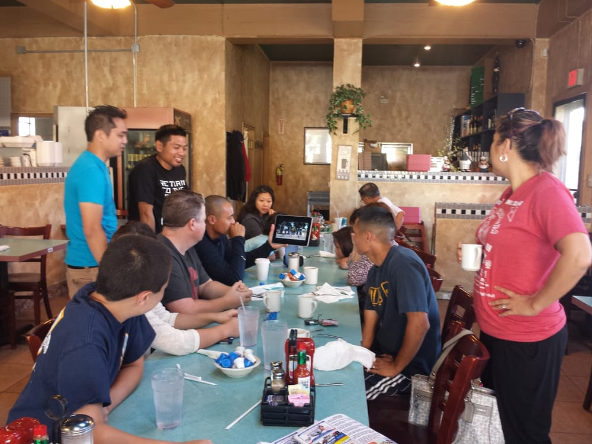
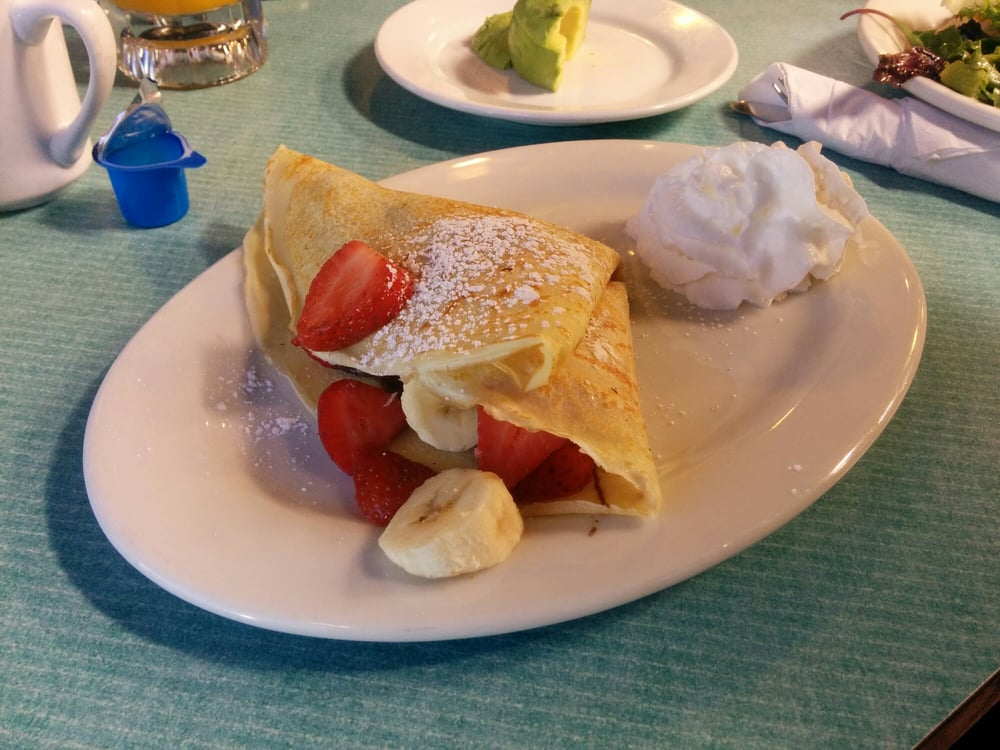

"Thier toast is toastier than my asshole" - Tyron Bandachit
Dec 4, 2011
"Their avocados are out of this world! 11/10 recommended" - Kevin Tran
Aug 11, 2012
"Just a perfect meal." - Anonymous
Apr 20, 2013
"Honestly, I thought this place would be trash, but I was proven wrong. It's amazing." - Ezra Salandanan
July 29, 2013
"After trying their toast that was toastier than my asshole, I had to come back and try some more stuff. Their hash browns are fried to a golden brown perfection. Just like my asshole." - Tyron Bandachit
Apr 29, 2014
"I love me some sweet crepes, and this crepe was sweeter than my asshole. Trust me, I've tried it." - Carlos May
July 19, 2014
"It was such a blast eating here." - Glendale Acosta

Dec 22, 2014
"Yum!" - Anonymous
May 24, 2015
"Thier chocolate is as dark as my skin! I love it!" - Guinn
Jul 16, 2015
"Came here on a date. Left loving the food more than I love my man." - Ryan Canlas
Sep 7, 2015
"A perfect blend of strawberries and bananas. Delicious." - Anonymous

Nov 20, 2015
"Love the interior" - Anonymous
Jan 10, 2016
"I love my food just how I love my personality - spicy." - Ryan Canlas
Mar 20, 2016
"Their food had me speechless" - Chris Payumo
July 3, 2016
"I really loved their cheese" - Justin Bermudez
But don't take it from us, here's what our customers had to say.